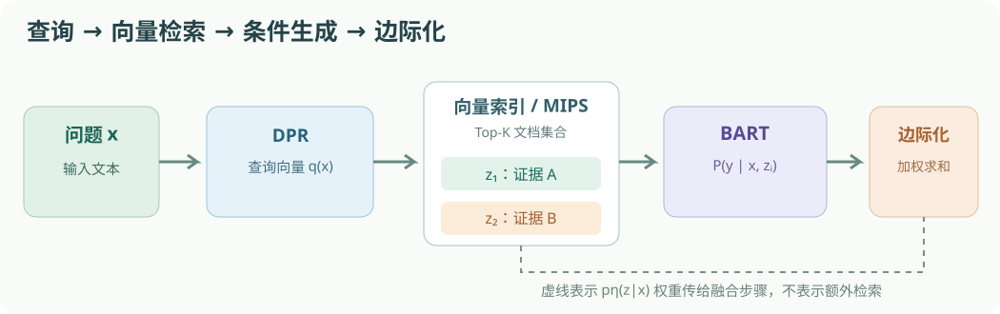
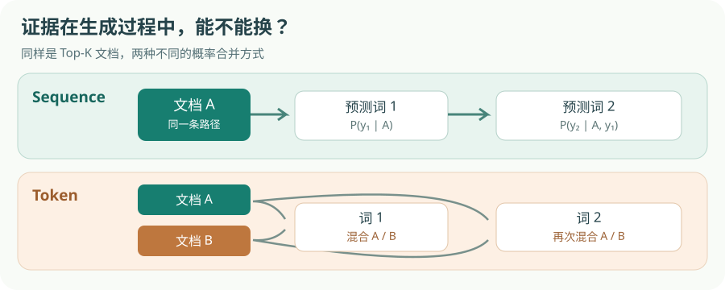
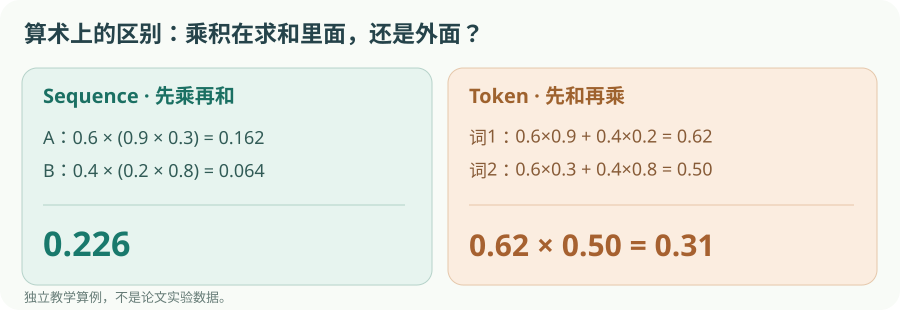

Understanding RAG
大模型已经读过很多文字，为什么回答问题前仍要“翻资料”？用两篇文档、两个词的算术题，理解检索增强生成、DPR、BART，以及 RAG-Sequence / RAG-Token 之间真正的数学区别。
01 · 闭卷考试和开卷考试
想象你问一个助手：“某个事实最早发表于哪一年？”如果它只能凭训练时学到的参数作答，就像参加闭卷考试：可能会记错，也不容易查看出处。若给它一本可以随时更换的资料册，至少有机会先找到相关条目。
参数记忆
训练形成的规律存于模型权重，擅长语言组织，但不方便单独修改一个事实，也不天然给出可检查的来源。
非参数记忆
外部可更新的文本库，可按问题检索；但检索器可能错过关键资料，文档也可能过时或冲突。
Lewis 等人的论文把预训练检索器和预训练生成器合成一个概率模型，将被检索的文档当作潜在变量，在计算答案概率时对候选文档进行求和。[1, §1–2]
02 · RAG：一位检索员加一位写作者
先输入问题 x，DPR 查询编码器产生向量；在预先编码好的文档索引中做最大内积搜索（MIPS），得到 Top-K 段落。随后用 BART 在各段落作为上下文的条件下预测答案，并按检索器提供的文档权重进行边际化。[1, Figure 1, §2]

原始论文的具体实现采用 DPR + BART-large，外部文档库取自 2018 年 12 月的 Wikipedia，拆分为约 100 词的片段，总计约 2100 万段。[1, §2–3] 今天很多系统把检索文本直接放入 LLM 上下文，同样叫 RAG，但这不等于原论文的完整概率模型。
03 · 检索器怎么知道哪篇资料相关？
DPR 有两支编码器：一支将问题 x 编成查询向量 q(x)，另一支将文档 z 编成向量 d(z)。计算它们的内积，分数越大，文档越优先进入候选集。[1, §2.2]
一个纯教学示例：q=(1,1)，A=(2,0)，B=(0,1)，内积分别为 2、1，因此 A 的检索排名更靠前。这并不是 DPR 真正输出的二维向量，只是说明内积排序的原理。
Top-K 是近似：系统没有把所有文档都交给生成器，未进入候选集的知识也无法参与后续计算。论文使用预构建向量索引加速搜索，选取 K 的实验值依赖训练、验证设置。[1, §3]
04 · 两种 RAG：求和在乘号内还是乘号外？
一个长度 N 的答案由 N 个 token 构成。预测第 i 个 token 时，生成器能看到问题 x、文档 z 和先前已经生成的 token。两种概率模型的核心差异，是整句固定一个潜在文档，还是每个位置重新混合多个文档的预测。[1, §2.1]

RAG-Sequence：先乘词概率，再求文档加权和
RAG-Token：先在每个词处求文档加权和，再把各词相乘
05 · 两篇文档 × 两个词，亲手算一遍
设 Top-K 的候选只有 A 和 B，演示用的检索权重分别为 0.6 和 0.4。生成器对词 1、词 2（已知词 1）的条件概率如下。这些数字是独立构造的教学算例，不是论文实验结果。
| 文档 | 检索权重 | 词 1 的条件概率 | 词 2 的条件概率 |
|---|---|---|---|
| A | 0.6 | 0.9 | 0.3 |
| B | 0.4 | 0.2 | 0.8 |

Sequence：0.6×(0.9×0.3)+0.4×(0.2×0.8)=0.226。A 下两个词的概率必须一起相乘，B 同理。
Token：(0.6×0.9+0.4×0.2)×(0.6×0.3+0.4×0.8)=0.310。两个词分别先混合文档支持。
这里将两篇文档的权重设置为和为 1，方便算术演示。原论文公式对完整检索分布作 Top-K 截断近似，所以不要把本例的权重直接当作真实索引的未截断归一化概率。
06 · 互动：如果检索器更相信文档 A？
拖动滑块只修改 A 的权重 w，B 的权重自动取 1−w；四个条件概率保持不变。观察两种公式随权重变化。
支持触屏和键盘方向键；没有 JavaScript 时也保留上面的静态推导。
把 w 拖到 0 或 1：只剩下一篇文档，两种结果就相同。它们的差值并不直接代表模型的准确率高低。
07 · 怎样训练？为什么不需要“正确文档”标签？
论文训练使用问题/目标输出 (x,y) 对，最小化目标文本的负对数边际似然，不直接给出“应取哪篇文档”的标签。[1, §2.4]
式中 j 是训练样本序号，p(yⱼ|xⱼ) 按所用 RAG-Sequence 或 RAG-Token 的定义计算。若某篇文档能让正确答案的概率更高，它就可能通过这条目标为检索器带来学习信号。
推理时也有区别
RAG-Token 的下一词概率是检索文档上的加权混合，可以接入通常的自回归 beam search。RAG-Sequence 需要先按文档生成候选答案，再在不同文档路径之间求和，论文提出 Thorough/Fast 解码近似以控制计算量。[1, §2.5]
08 · 论文到底验证了什么？
NeurIPS 2020 原文覆盖开放域问答（Natural Questions、TriviaQA、WebQuestions、CuratedTrec）、生成式问答（MS-MARCO）、Jeopardy 问题生成与 FEVER 事实核验。[1, §3–4] 各任务指标和测试集不同，不能压缩成一个笼统的“RAG 率”。
原文范围内的发现
论文报告在当时的多个开放域问答比较中取得有竞争力的效果，并在三个开放域问答数据集达到当时的最佳表现；生成任务的输出也被报告为更具体、更符合事实。[1, Abstract, §4]
不能外推的结论
它没有证明“所有现代 RAG 都比闭卷模型好”，也不证明“只要检索到文档就不会幻觉”。结果依赖 2020 年模型、数据与基线。
论文展示更换外部资料库以更新模型可访问知识的可能性。但资料可替换不等于每个新事实都能被检索到并正确表述。对来源和版本的核查仍是系统工作。[1, §4.5]
09 · 最常见的三种失败
- 没检索到：有用证据不在 Top-K，生成器无法根据它作答；分块太粗或太碎都会影响召回。
- 检索到冲突证据：两段文字可能来自不同时间、版本，模型计算概率并不能自动判断哪一段更可信。
- 生成不受证据约束：即使输入了正确文档，模型也可能补充没有根据的细节。原始 RAG 公式并不提供逐句引用的形式化保证。
现代系统可以额外使用稀疏/稠密混合检索、重排序、证据去重、引用验证；这些是工程扩展，不是原论文必含模块。Anthropic 对 Contextual Retrieval 的实践是一个后续案例。[3]
10 · 做实验时该测什么？
为了找出失败发生在哪一层，应把检索质量和答案质量分开测量。下表是本文的工程建议，不是论文实验表的转录。
| 层级 | 关键问题 | 验证方式 |
|---|---|---|
| 检索召回 | 答案证据有没有进入 Top-K？ | 带标注文档的测试集，Recall@K、证据覆盖率 |
| 生成质量 | 有证据时是否给对答案？ | 有标准答案时 EM/F1；生成文本需人工或支持度核验 |
| 可靠性 | 文档缺失、互相矛盾、已过期时表现如何？ | 对抗样例、无答案拒答、文档版本核对 |
| 系统性能 | 耗时与成本落在哪？ | 记录检索、重排序、生成分别的延迟和 token 成本 |
外部资料还可能包含恶意“指令”文本：在现代工具系统中，应把文档视为不可信数据，而不是直接授予系统权限。这是延伸的安全工程建议，而非原始论文的专门实验。
11 · 用纯 Python 检查概率
无需下载模型或数据库，也能运行这篇文章的两文档示例。仓库提供 toy_probability.py，这是概率定义的教学测试，不是 DPR / BART 的训练复现。
from math import isclose
w = (0.6, 0.4)
a = (0.9, 0.2)
b = (0.3, 0.8)
seq = sum(p*x*y for p,x,y in zip(w,a,b))
tok = sum(p*x for p,x in zip(w,a)) * sum(p*y for p,y in zip(w,b))
assert isclose(seq, 0.226)
assert isclose(tok, 0.310)
print(seq, tok)自己把 token 数改成 1，或者将一个文档的权重设为 1，观察两个定义在什么情况下等价。
12 · 来源与继续阅读
- [1] Lewis et al. (2020). Retrieval-Augmented Generation for Knowledge-Intensive NLP Tasks, NeurIPS 33, §2–4（主要事实、概率公式与实验）。arXiv 原文。
- [2] Hugging Face Transformers. RAG 模型文档（实现参考，API 随版本变化）。
- [3] Anthropic. Contextual Retrieval（后续工程实践，不等同于 NeurIPS 2020 论断）。
- [4] Meta AI. RAG 研究介绍（同期作者机构的一手说明）。
推荐阅读次序：先读 Embeddings 理解向量表示，再看 Transformer 理解序列生成，最后回到本文的 RAG-Sequence 与 RAG-Token。所有示例和 SVG 均为独立教学构造，并非对原论文图片的复制。